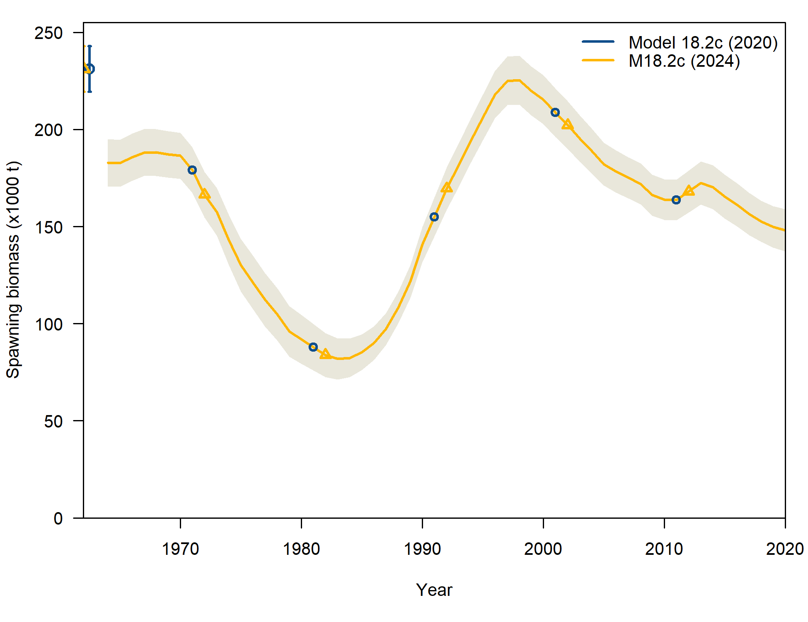
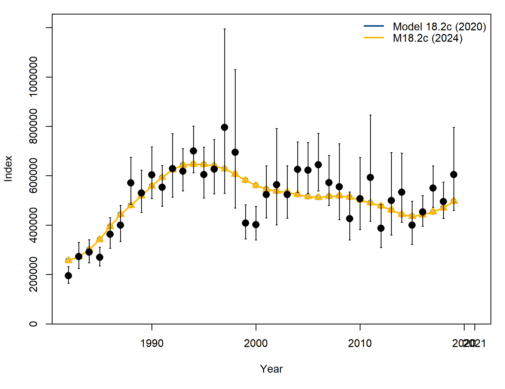
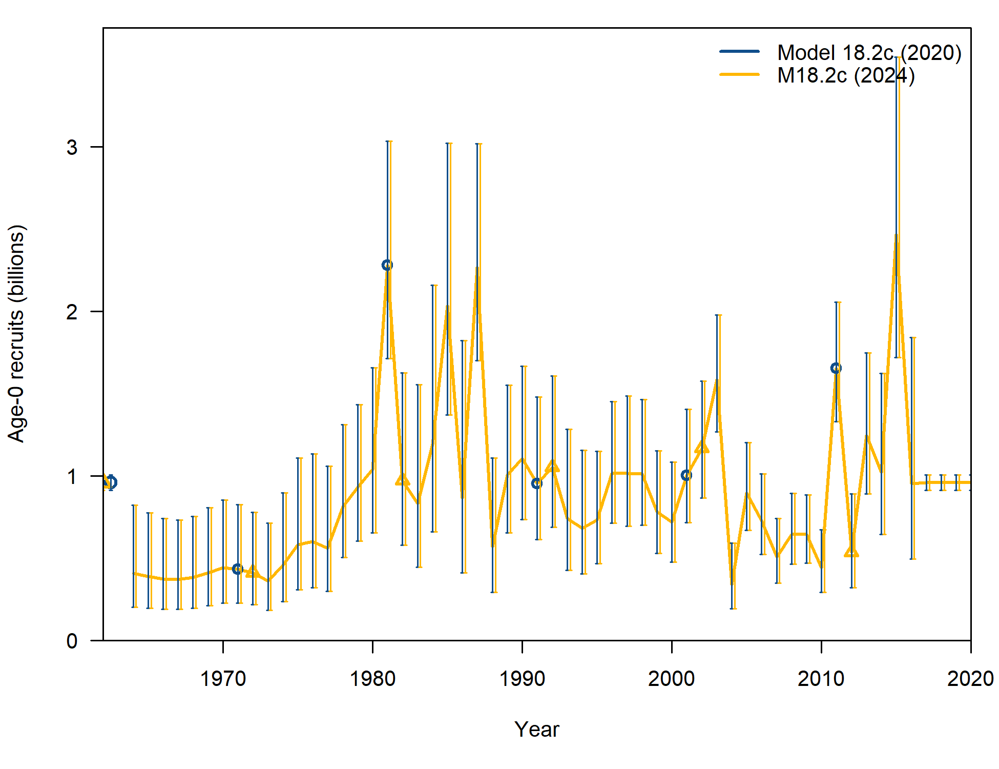
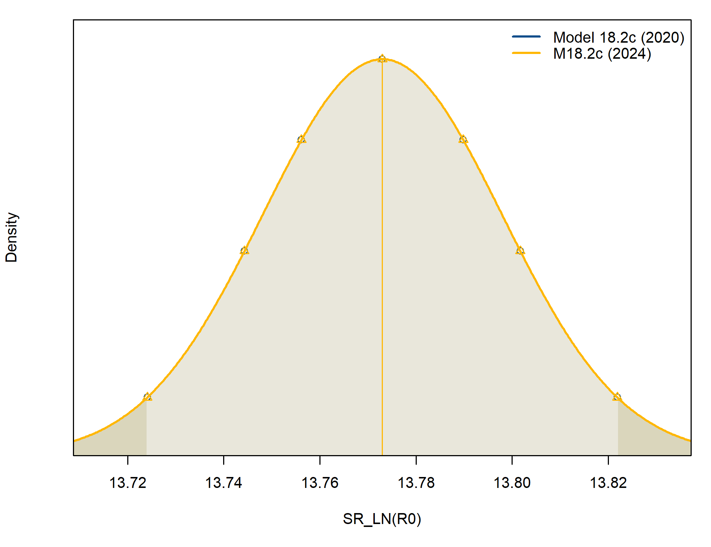

$SS_version
[1] "3.30.16.00;_2020_09_03;_safe;_Stock_Synthesis_by_Richard_Methot_(NOAA)_using_ADMB_12.2"
$SS_versionshort
[1] "3.30"
$SS_versionNumeric
[1] 3.3
$StartTime
[1] "StartTime: Mon Dec 18 10:38:51 2023"
$RunTime
[1] "0 hours, 1 minutes, 42 seconds."
$Files_used
[1] "Data_File: 2020_BSAI_FHS.dat Control_File: BSAI_FHS.ctl"
$log_det_hessian
[1] NA
$Nwarnings
[1] 10
$warnings
[1] "#V3.30.16.00;_2020_09_03;_safe;_Stock_Synthesis_by_Richard_Methot_(NOAA)_using_ADMB_12.2"
[2] "#Stock Synthesis (SS) is a work of the U.S. Government and is not subject to copyright protection in the United States."
[3] "#Foreign copyrights may apply. See copyright.txt for more information."
[4] "Mon Dec 18 10:38:51 2023"
[5] ""
[6] "This model has just one settlement event; recommend changing to recr_dist_method 4 which takes no recr_dist parameters"
[7] " warning: poor convergence in Fmsy, final dy/dy2= -0.247921"
[8] " Fmsy is close to max allowed; check for convergence "
[9] "Final gradient: 0.00150215 is larger than final_conv: 0.0001"
[10] " N warnings: 4"
$likelihoods_used
values lambdas
TOTAL 1791.5399999999999636202 NA
Catch 0.0000000000000701686 NA
Equil_catch 0.0002918190000000000 NA
Survey -36.3359000000000023078 NA
Length_comp 211.5360000000000013642 NA
Age_comp 1610.1099999999998999556 NA
Recruitment 6.2235699999999996024 1
InitEQ_Regime 0.0000000000000000000 1
Forecast_Recruitment 0.0000000000000000000 1
Parm_priors 0.0000000000000000000 1
Parm_softbounds 0.0033561600000000000 NA
Parm_devs 0.0000000000000000000 1
Crash_Pen 0.0000000000000000000 1
$likelihoods_laplace
values lambdas
NoBias_corr_Recruitment(info_only) -6.05843 1
Laplace_obj_fun(info_only) 1779.26000 NA
$likelihoods_by_fleet
Label ALL Fishery Survey
164 Catch_lambda NA 1.00000e+00 1.0000
165 Catch_like 7.01686e-14 7.01686e-14 0.0000
166 Init_equ_lambda NA 1.00000e+00 1.0000
167 Init_equ_like 2.91819e-04 2.91819e-04 0.0000
168 Surv_lambda NA 0.00000e+00 1.0000
169 Surv_like -3.63359e+01 0.00000e+00 -36.3359
170 Surv_N_use NA 0.00000e+00 38.0000
171 Surv_N_skip NA 0.00000e+00 0.0000
172 Length_lambda NA 1.00000e+00 1.0000
173 Length_like 2.11536e+02 5.41943e+01 157.3420
174 Length_N_use NA 3.00000e+01 38.0000
175 Length_N_skip NA 1.70000e+01 0.0000
176 Age_lambda NA 1.00000e+00 1.0000
177 Age_like 1.61011e+03 4.91567e+01 1560.9600
178 Age_N_use NA 1.70000e+01 1041.0000
179 Age_N_skip NA 3.00000e+00 24.0000
$N_estimated_parameters
[1] 78
$table_of_phases
-99 -4 -3 -2 -1 1 2 3
2 8 15 1 2 10 66 2
$estimated_non_dev_parameters
Value Phase Min Max
L_at_Amin_Fem_GP_1 14.2596000 1 2.00000 30.0000
L_at_Amax_Fem_GP_1 44.8843000 1 25.00000 80.0000
VonBert_K_Fem_GP_1 0.1422030 1 0.01000 2.0000
CV_young_Fem_GP_1 0.1128540 2 0.00100 0.3000
CV_old_Fem_GP_1 0.0837611 2 0.00100 0.3000
L_at_Amin_Mal_GP_1 14.0914000 1 1.00000 45.0000
L_at_Amax_Mal_GP_1 37.5720000 1 20.00000 70.0000
VonBert_K_Mal_GP_1 0.2178370 1 0.05000 0.4000
CV_young_Mal_GP_1 0.1248720 2 0.00100 0.3000
CV_old_Mal_GP_1 0.0663803 2 0.00100 0.3000
SR_LN(R0) 13.7730000 1 -2.49224 17.5078
InitF_seas_1_flt_1Fishery 0.0236359 1 0.00000 1.0000
Size_inflection_Fishery(1) 38.2909000 1 0.00000 80.0000
Size_95%width_Fishery(1) 8.3277800 1 0.00000 80.0000
SzSel_Male_Infl_Fishery(1) -2.7634900 2 -80.00000 80.0000
SzSel_Male_Slope_Fishery(1) -0.3381310 2 -80.00000 80.0000
Age_DblN_peak_Survey(2) 6.6982000 2 1.00000 40.0000
Age_DblN_ascend_se_Survey(2) 2.0295700 2 -4.00000 4.0000
AgeSel_2Male_Peak_Survey -0.7718700 3 -15.00000 15.0000
AgeSel_2Male_Ascend_Survey -0.3064290 3 -15.00000 15.0000
Size_inflection_Fishery(1)_BLK1repl_1964 23.3290000 2 0.00000 80.0000
Size_95%width_Fishery(1)_BLK1repl_1964 6.7108000 2 0.00000 80.0000
SzSel_Male_Infl_Fishery(1)_BLK1repl_1964 0.9322660 2 -40.00000 40.0000
SzSel_Male_Slope_Fishery(1)_BLK1repl_1964 0.8601300 2 -40.00000 40.0000
Init Status Parm_StDev
L_at_Amin_Fem_GP_1 14.2436000 OK 0.18891300
L_at_Amax_Fem_GP_1 44.5605000 OK 0.30575400
VonBert_K_Fem_GP_1 0.1370450 OK 0.00489964
CV_young_Fem_GP_1 0.1246060 OK 0.00549592
CV_old_Fem_GP_1 0.0923090 OK 0.00335356
L_at_Amin_Mal_GP_1 13.9271000 OK 0.20350900
L_at_Amax_Mal_GP_1 37.0605000 OK 0.18935900
VonBert_K_Mal_GP_1 0.2189740 OK 0.00626034
CV_young_Mal_GP_1 0.1421180 OK 0.00619486
CV_old_Mal_GP_1 0.0809258 OK 0.00280660
SR_LN(R0) 13.7860000 OK 0.02495030
InitF_seas_1_flt_1Fishery 0.0244087 OK 0.00142710
Size_inflection_Fishery(1) 38.0862000 OK 0.81803500
Size_95%width_Fishery(1) 7.9127500 OK 0.66761400
SzSel_Male_Infl_Fishery(1) -2.9586900 OK 0.50081500
SzSel_Male_Slope_Fishery(1) -0.4588090 OK 0.69561100
Age_DblN_peak_Survey(2) 7.5279100 OK 0.25404900
Age_DblN_ascend_se_Survey(2) 2.3426100 OK 0.12457500
AgeSel_2Male_Peak_Survey -0.8995160 OK 0.28241000
AgeSel_2Male_Ascend_Survey -0.3164280 OK 0.15782900
Size_inflection_Fishery(1)_BLK1repl_1964 23.5946000 OK 2.09742000
Size_95%width_Fishery(1)_BLK1repl_1964 6.9263800 OK 2.29875000
SzSel_Male_Infl_Fishery(1)_BLK1repl_1964 0.7231900 OK 2.41433000
SzSel_Male_Slope_Fishery(1)_BLK1repl_1964 0.7140260 OK 3.07081000
Gradient Pr_type Prior Pr_SD
L_at_Amin_Fem_GP_1 0.00004322450 No_prior NA NA
L_at_Amax_Fem_GP_1 0.00016528100 No_prior NA NA
VonBert_K_Fem_GP_1 0.00019873000 No_prior NA NA
CV_young_Fem_GP_1 0.00001212760 No_prior NA NA
CV_old_Fem_GP_1 0.00002487720 No_prior NA NA
L_at_Amin_Mal_GP_1 0.00004927880 No_prior NA NA
L_at_Amax_Mal_GP_1 0.00017316300 No_prior NA NA
VonBert_K_Mal_GP_1 0.00003325820 No_prior NA NA
CV_young_Mal_GP_1 -0.00000980004 No_prior NA NA
CV_old_Mal_GP_1 -0.00000721671 No_prior NA NA
SR_LN(R0) 0.00150215000 No_prior NA NA
InitF_seas_1_flt_1Fishery -0.00013662100 No_prior NA NA
Size_inflection_Fishery(1) 0.00007758280 No_prior NA NA
Size_95%width_Fishery(1) -0.00002606010 No_prior NA NA
SzSel_Male_Infl_Fishery(1) 0.00006411240 No_prior NA NA
SzSel_Male_Slope_Fishery(1) -0.00005640020 No_prior NA NA
Age_DblN_peak_Survey(2) -0.00018248600 No_prior NA NA
Age_DblN_ascend_se_Survey(2) 0.00006550450 No_prior NA NA
AgeSel_2Male_Peak_Survey -0.00010621700 No_prior NA NA
AgeSel_2Male_Ascend_Survey 0.00013405700 No_prior NA NA
Size_inflection_Fishery(1)_BLK1repl_1964 -0.00000994963 No_prior NA NA
Size_95%width_Fishery(1)_BLK1repl_1964 0.00002772350 No_prior NA NA
SzSel_Male_Infl_Fishery(1)_BLK1repl_1964 -0.00001824070 No_prior NA NA
SzSel_Male_Slope_Fishery(1)_BLK1repl_1964 0.00003226470 No_prior NA NA
Pr_Like Afterbound
L_at_Amin_Fem_GP_1 NA OK
L_at_Amax_Fem_GP_1 NA OK
VonBert_K_Fem_GP_1 NA OK
CV_young_Fem_GP_1 NA OK
CV_old_Fem_GP_1 NA OK
L_at_Amin_Mal_GP_1 NA OK
L_at_Amax_Mal_GP_1 NA OK
VonBert_K_Mal_GP_1 NA OK
CV_young_Mal_GP_1 NA OK
CV_old_Mal_GP_1 NA OK
SR_LN(R0) NA OK
InitF_seas_1_flt_1Fishery NA OK
Size_inflection_Fishery(1) NA OK
Size_95%width_Fishery(1) NA OK
SzSel_Male_Infl_Fishery(1) NA OK
SzSel_Male_Slope_Fishery(1) NA OK
Age_DblN_peak_Survey(2) NA OK
Age_DblN_ascend_se_Survey(2) NA OK
AgeSel_2Male_Peak_Survey NA OK
AgeSel_2Male_Ascend_Survey NA OK
Size_inflection_Fishery(1)_BLK1repl_1964 NA OK
Size_95%width_Fishery(1)_BLK1repl_1964 NA OK
SzSel_Male_Infl_Fishery(1)_BLK1repl_1964 NA OK
SzSel_Male_Slope_Fishery(1)_BLK1repl_1964 NA OK
$maximum_gradient_component
[1] 0.00150215
$parameters_with_highest_gradients
Value Gradient
SR_LN(R0) 13.773000 0.001502150
Main_RecrDev_1981 0.943678 0.000207548
Main_RecrDev_1985 0.834856 0.000207452
VonBert_K_Fem_GP_1 0.142203 0.000198730
Age_DblN_peak_Survey(2) 6.698200 -0.000182486
$Length_Comp_Fit_Summary
Data_type Fleet Recommend_var_adj # N Npos min_Nsamp max_Nsamp
1500 4 1 0.151666 # 47 30 0.064561 268.832
1501 4 2 1.351970 # 38 38 36.398600 107.848
mean_Nsamp_in mean_Nsamp_adj mean_Nsamp_DM DM_theta mean_effN HarMean
1500 358.367 23.1365 NA NA 204.790 54.3521
1501 254.289 85.7017 NA NA 450.842 343.7920
Curr_Var_Adj Fleet_name
1500 0.064561 Fishery
1501 0.337024 Survey
$Age_Comp_Fit_Summary
Data_type Fleet Recommend_var_adj # Nsamp_adj Npos min_Nsamp max_Nsamp
2593 5 1 1 # 47 17 19.810400 67.5886
2594 5 2 1 # 38 1041 0.284172 14.7769
mean_Nsamp_in mean_Nsamp_adj mean_Nsamp_DM DM_theta mean_effN HarMean
2593 349.0590 40.67650 NA NA 273.1840 260.0700
2594 13.7272 3.90088 NA NA 16.2866 3.8199
Curr_Var_Adj Fleet_name
2593 0.116532 Fishery
2594 0.284172 Survey
$SBzero
[1] 231191
$current_depletion
[1] 0.6655363
$last_years_SPR
[1] 0.813759
$SPRratioLabel
[1] "1-SPR"
$sigma_R_in
[1] 0.5
$sigma_R_info
period N_devs SD_of_devs Var_of_devs mean_SE mean_SEsquared
1 Main 44 0.4626654 0.2140593 0.2342803 0.05984084
2 Early+Main 54 0.5229150 0.2734401 0.2570208 0.07239722
3 Early+Main+Late 58 0.5056632 0.2556953 NA NA
sqrt_sum_of_components SD_of_devs_over_sigma_R sqrt_sum_over_sigma_R
1 0.5233547 0.9253308 1.046709
2 0.5880793 1.0458300 1.176159
3 NA 1.0113264 NA
alternative_sigma_R
1 0.523354662603914
2 0.588079334475016
3 <NA>
$rmse_table
ERA N RMSE RMSE_over_sigmaR mean_BiasAdj
1 main 44 0.457377 0.836776 0.714045
$RecDev_method
[1] 12024 BSAI FHS Bridging Analyses
Overview
This electronic document describes the analyses undertaken to bridge the last “full” assessment of BSAI Flathead Sole (Monnahan, 2020) into the latest Stock Synthesis (SS3) software version, as well as explorations of sequential inclusion of recent data.
The general workflow was as follows: 1) The 2020 model, referred to as Model 18.2c (2020), was moved from SS3 version 3.30.16 to the the newest SS3 software version as of December 2023 (3.30.22) downloaded from the NOAA Virtual Lab. Comparisons between model derived quantities and likelihoods are provided in this document. The version with the updated software is labeled as 18.2c (2024).
- Data bridging proceeded
Bridging to SS3 v 3.30.22
$SS_version
[1] "3.30.22.00;_safe;_compile_date:_Oct 30 2023;_Stock_Synthesis_by_Richard_Methot_(NOAA)_using_ADMB_13.1"
$SS_versionshort
[1] "3.30"
$SS_versionNumeric
[1] 3.3
$StartTime
[1] "StartTime: Mon Dec 18 10:39:07 2023"
$RunTime
[1] "0 hours, 1 minutes, 18 seconds."
$Files_used
[1] "Data_File: 2020_BSAI_FHS.dat Control_File: BSAI_FHS.ctl"
$log_det_hessian
[1] 291.263
$Final_phase
[1] 3
$N_iterations
[1] 591
$Nwarnings
[1] 7
$warnings
[1] "Note 1 Suggestion: This model has just one settlement event. Changing to recr_dist_method 4 and removing the recruitment distribution parameters at the end of the MG parms section (below growth parameters) will produce identical results and simplify the model."
[2] "Warning 1 : parameter init value is greater than parameter max 999 > 5 for parm: 11; search for <now check> in echoinput.sso for parm_type"
[3] "Warning 2 : poor convergence in Fmsy, final dy/dy2= -0.247921"
[4] "Warning 3 : Fmsy.mey is close to max allowed; check for convergence "
[5] "Warning 4 : Final gradient: 0.00150215 is larger than final_conv: 0.0001"
[6] "Note 2 Information: A revised protocol for the Fcast_yr specification is available and recommended."
[7] " 4 warnings and 2 notes "
$likelihoods_used
values lambdas
TOTAL 1791.5399999999999636202 NA
Catch 0.0000000000000701686 NA
Equil_catch 0.0002918190000000000 NA
Survey -36.3359000000000023078 NA
Length_comp 211.5360000000000013642 NA
Age_comp 1610.1099999999998999556 NA
Recruitment 6.2235699999999996024 1
InitEQ_Regime 0.0000000000000000000 1
Forecast_Recruitment 0.0000000000000000000 1
Parm_priors 0.0000000000000000000 1
Parm_softbounds 0.0033561600000000000 NA
Parm_devs 0.0000000000000000000 1
Crash_Pen 0.0000000000000000000 1
$likelihoods_laplace
values lambdas
NoBias_corr_Recruitment(info_only) -6.05843 1
Laplace_obj_fun(info_only) 1779.26000 NA
$likelihoods_by_fleet
Label ALL Fishery Survey
171 Catch_lambda NA 1.00000e+00 1.0000
172 Catch_like 7.01686e-14 7.01686e-14 0.0000
173 Init_equ_lambda NA 1.00000e+00 1.0000
174 Init_equ_like 2.91819e-04 2.91819e-04 0.0000
175 Surv_lambda NA 0.00000e+00 1.0000
176 Surv_like -3.63359e+01 0.00000e+00 -36.3359
177 Surv_N_use NA 0.00000e+00 38.0000
178 Surv_N_skip NA 0.00000e+00 0.0000
179 Length_lambda NA 1.00000e+00 1.0000
180 Length_like 2.11536e+02 5.41943e+01 157.3420
181 Length_N_use NA 3.00000e+01 38.0000
182 Length_N_skip NA 1.70000e+01 0.0000
183 Age_lambda NA 1.00000e+00 1.0000
184 Age_like 1.61011e+03 4.91567e+01 1560.9600
185 Age_N_use NA 1.70000e+01 1041.0000
186 Age_N_skip NA 3.00000e+00 24.0000
$N_estimated_parameters
[1] 78
$table_of_phases
-99 -4 -3 -2 -1 1 2 3
2 8 15 1 2 10 66 2
$estimated_non_dev_parameters
Value Phase Min Max
L_at_Amin_Fem_GP_1 14.2596000 1 2.00000 30.0000
L_at_Amax_Fem_GP_1 44.8843000 1 25.00000 80.0000
VonBert_K_Fem_GP_1 0.1422030 1 0.01000 2.0000
CV_young_Fem_GP_1 0.1128540 2 0.00100 0.3000
CV_old_Fem_GP_1 0.0837611 2 0.00100 0.3000
L_at_Amin_Mal_GP_1 14.0914000 1 1.00000 45.0000
L_at_Amax_Mal_GP_1 37.5720000 1 20.00000 70.0000
VonBert_K_Mal_GP_1 0.2178370 1 0.05000 0.4000
CV_young_Mal_GP_1 0.1248720 2 0.00100 0.3000
CV_old_Mal_GP_1 0.0663803 2 0.00100 0.3000
SR_LN(R0) 13.7730000 1 -2.49224 17.5078
InitF_seas_1_flt_1Fishery 0.0236359 1 0.00000 1.0000
Size_inflection_Fishery(1) 38.2909000 1 0.00000 80.0000
Size_95%width_Fishery(1) 8.3277800 1 0.00000 80.0000
SzSel_Male_Infl_Fishery(1) -2.7634900 2 -80.00000 80.0000
SzSel_Male_Slope_Fishery(1) -0.3381310 2 -80.00000 80.0000
Age_DblN_peak_Survey(2) 6.6982000 2 1.00000 40.0000
Age_DblN_ascend_se_Survey(2) 2.0295700 2 -4.00000 4.0000
AgeSel_2Male_Peak_Survey -0.7718700 3 -15.00000 15.0000
AgeSel_2Male_Ascend_Survey -0.3064290 3 -15.00000 15.0000
Size_inflection_Fishery(1)_BLK1repl_1964 23.3290000 2 0.00000 80.0000
Size_95%width_Fishery(1)_BLK1repl_1964 6.7108000 2 0.00000 80.0000
SzSel_Male_Infl_Fishery(1)_BLK1repl_1964 0.9322660 2 -40.00000 40.0000
SzSel_Male_Slope_Fishery(1)_BLK1repl_1964 0.8601300 2 -40.00000 40.0000
Init Status Parm_StDev
L_at_Amin_Fem_GP_1 14.2436000 OK 0.18891300
L_at_Amax_Fem_GP_1 44.5605000 OK 0.30575400
VonBert_K_Fem_GP_1 0.1370450 OK 0.00489964
CV_young_Fem_GP_1 0.1246060 OK 0.00549592
CV_old_Fem_GP_1 0.0923090 OK 0.00335356
L_at_Amin_Mal_GP_1 13.9271000 OK 0.20350900
L_at_Amax_Mal_GP_1 37.0605000 OK 0.18935900
VonBert_K_Mal_GP_1 0.2189740 OK 0.00626034
CV_young_Mal_GP_1 0.1421180 OK 0.00619486
CV_old_Mal_GP_1 0.0809258 OK 0.00280660
SR_LN(R0) 13.7860000 OK 0.02495030
InitF_seas_1_flt_1Fishery 0.0244087 OK 0.00142710
Size_inflection_Fishery(1) 38.0862000 OK 0.81803500
Size_95%width_Fishery(1) 7.9127500 OK 0.66761400
SzSel_Male_Infl_Fishery(1) -2.9586900 OK 0.50081500
SzSel_Male_Slope_Fishery(1) -0.4588090 OK 0.69561100
Age_DblN_peak_Survey(2) 7.5279100 OK 0.25404900
Age_DblN_ascend_se_Survey(2) 2.3426100 OK 0.12457500
AgeSel_2Male_Peak_Survey -0.8995160 OK 0.28241000
AgeSel_2Male_Ascend_Survey -0.3164280 OK 0.15782900
Size_inflection_Fishery(1)_BLK1repl_1964 23.5946000 OK 2.09742000
Size_95%width_Fishery(1)_BLK1repl_1964 6.9263800 OK 2.29875000
SzSel_Male_Infl_Fishery(1)_BLK1repl_1964 0.7231900 OK 2.41433000
SzSel_Male_Slope_Fishery(1)_BLK1repl_1964 0.7140260 OK 3.07081000
Gradient Pr_type Prior Pr_SD
L_at_Amin_Fem_GP_1 0.00004322450 No_prior NA NA
L_at_Amax_Fem_GP_1 0.00016528100 No_prior NA NA
VonBert_K_Fem_GP_1 0.00019873000 No_prior NA NA
CV_young_Fem_GP_1 0.00001212760 No_prior NA NA
CV_old_Fem_GP_1 0.00002487720 No_prior NA NA
L_at_Amin_Mal_GP_1 0.00004927880 No_prior NA NA
L_at_Amax_Mal_GP_1 0.00017316300 No_prior NA NA
VonBert_K_Mal_GP_1 0.00003325820 No_prior NA NA
CV_young_Mal_GP_1 -0.00000980004 No_prior NA NA
CV_old_Mal_GP_1 -0.00000721671 No_prior NA NA
SR_LN(R0) 0.00150215000 No_prior NA NA
InitF_seas_1_flt_1Fishery -0.00013662100 No_prior NA NA
Size_inflection_Fishery(1) 0.00007758280 No_prior NA NA
Size_95%width_Fishery(1) -0.00002606010 No_prior NA NA
SzSel_Male_Infl_Fishery(1) 0.00006411240 No_prior NA NA
SzSel_Male_Slope_Fishery(1) -0.00005640020 No_prior NA NA
Age_DblN_peak_Survey(2) -0.00018248600 No_prior NA NA
Age_DblN_ascend_se_Survey(2) 0.00006550450 No_prior NA NA
AgeSel_2Male_Peak_Survey -0.00010621700 No_prior NA NA
AgeSel_2Male_Ascend_Survey 0.00013405700 No_prior NA NA
Size_inflection_Fishery(1)_BLK1repl_1964 -0.00000994963 No_prior NA NA
Size_95%width_Fishery(1)_BLK1repl_1964 0.00002772350 No_prior NA NA
SzSel_Male_Infl_Fishery(1)_BLK1repl_1964 -0.00001824070 No_prior NA NA
SzSel_Male_Slope_Fishery(1)_BLK1repl_1964 0.00003226470 No_prior NA NA
Pr_Like Afterbound
L_at_Amin_Fem_GP_1 NA OK
L_at_Amax_Fem_GP_1 NA OK
VonBert_K_Fem_GP_1 NA OK
CV_young_Fem_GP_1 NA OK
CV_old_Fem_GP_1 NA OK
L_at_Amin_Mal_GP_1 NA OK
L_at_Amax_Mal_GP_1 NA OK
VonBert_K_Mal_GP_1 NA OK
CV_young_Mal_GP_1 NA OK
CV_old_Mal_GP_1 NA OK
SR_LN(R0) NA OK
InitF_seas_1_flt_1Fishery NA OK
Size_inflection_Fishery(1) NA OK
Size_95%width_Fishery(1) NA OK
SzSel_Male_Infl_Fishery(1) NA OK
SzSel_Male_Slope_Fishery(1) NA OK
Age_DblN_peak_Survey(2) NA OK
Age_DblN_ascend_se_Survey(2) NA OK
AgeSel_2Male_Peak_Survey NA OK
AgeSel_2Male_Ascend_Survey NA OK
Size_inflection_Fishery(1)_BLK1repl_1964 NA OK
Size_95%width_Fishery(1)_BLK1repl_1964 NA OK
SzSel_Male_Infl_Fishery(1)_BLK1repl_1964 NA OK
SzSel_Male_Slope_Fishery(1)_BLK1repl_1964 NA OK
$maximum_gradient_component
[1] 0.00150215
$parameters_with_highest_gradients
Value Gradient
SR_LN(R0) 13.773000 0.001502150
Main_RecrDev_1981 0.943678 0.000207548
Main_RecrDev_1985 0.834856 0.000207452
VonBert_K_Fem_GP_1 0.142203 0.000198730
Age_DblN_peak_Survey(2) 6.698200 -0.000182486
$Length_Comp_Fit_Summary
Data_type Fleet Recommend_var_adj # N Npos min_Nsamp max_Nsamp
1570 4 1 0.151666 # 47 30 0.064561 268.832
1571 4 2 1.351970 # 38 38 36.398600 107.848
mean_Nsamp_in mean_Nsamp_adj mean_Nsamp_DM err_method err_index
1570 358.367 23.1365 NA 0 NA
1571 254.289 85.7017 NA 0 NA
par1 val1 par2 val2 mean_effN HarMean Curr_Var_Adj Fleet_name
1570 multinomial NA NA NA 204.790 54.3521 0.064561 Fishery
1571 multinomial NA NA NA 450.842 343.7920 0.337024 Survey
$Age_Comp_Fit_Summary
Data_type Fleet Recommend_var_adj # Nsamp_adj Npos min_Nsamp max_Nsamp
2663 5 1 0.745062 # 20 17 19.810400 67.5886
2664 5 2 0.278272 # 1065 1041 0.284172 14.7769
mean_Nsamp_in mean_Nsamp_adj mean_Nsamp_DM err_method err_index
2663 349.0590 40.67650 NA 0 NA
2664 13.7272 3.90088 NA 0 NA
par1 val1 par2 val2 mean_effN HarMean Curr_Var_Adj Fleet_name
2663 multinomial NA NA NA 273.1840 260.0700 0.116532 Fishery
2664 multinomial NA NA NA 16.2866 3.8199 0.284172 Survey
$SBzero
[1] 231191
$current_depletion
[1] 0.6655363
$last_years_SPR
[1] 0.813759
$SPRratioLabel
[1] "1-SPR"
$sigma_R_in
[1] 0.5
$sigma_R_info
period N_devs SD_of_devs Var_of_devs mean_SE mean_SEsquared
1 Main 44 0.4626654 0.2140593 0.2342803 0.05984084
2 Early+Main 54 0.5229150 0.2734401 0.2570208 0.07239722
3 Early+Main+Late 58 0.5056632 0.2556953 NA NA
sqrt_sum_of_components SD_of_devs_over_sigma_R sqrt_sum_over_sigma_R
1 0.5233547 0.9253308 1.046709
2 0.5880793 1.0458300 1.176159
3 NA 1.0113264 NA
alternative_sigma_R
1 0.523354662603914
2 0.588079334475016
3 <NA>
$rmse_table
ERA N RMSE RMSE_over_sigmaR mean_BiasAdj
1 main 44 0.457377 0.836776 0.714045
2 early 10 0.805060 2.592490 0.486286
$RecDev_method
[1] 1Warnings
M18.2c (2020) had generic warnings about the recr_dist method; poor FMSY convergence, and an issue with the final gradient. Only the latter is of concern. M18.2c (2024) threw the same warnings as well as an indication that the initial value for parm 11 was greater than the max (999>5); this is the end logit for the survey selex (forcing it to be asymptotic). I am comfortable with the consistency of these warnings; the gradient is identical between models (0.0015022).
Likelihood Components
Model 18.2c (2020) M18.2c (2024) Label
1 1.79154e+03 1.79154e+03 TOTAL
2 7.01686e-14 7.01686e-14 Catch
3 2.91819e-04 2.91819e-04 Equil_catch
4 -3.63359e+01 -3.63359e+01 Survey
5 2.11536e+02 2.11536e+02 Length_comp
6 1.61011e+03 1.61011e+03 Age_comp
7 6.22357e+00 6.22357e+00 Recruitment
11 3.35616e-03 3.35616e-03 Parm_softboundsModel Trajectories



